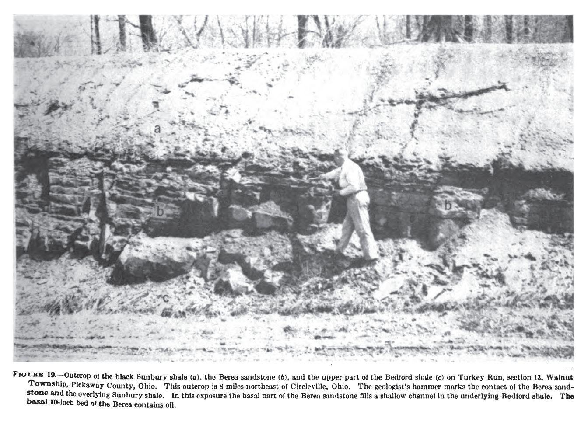
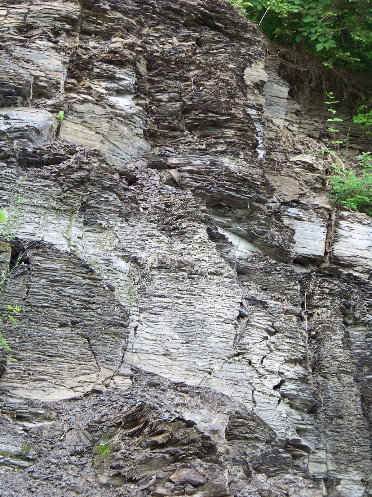
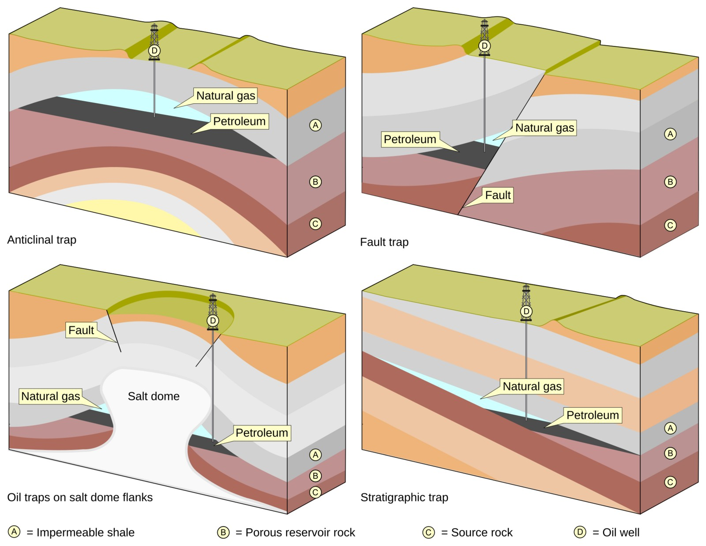
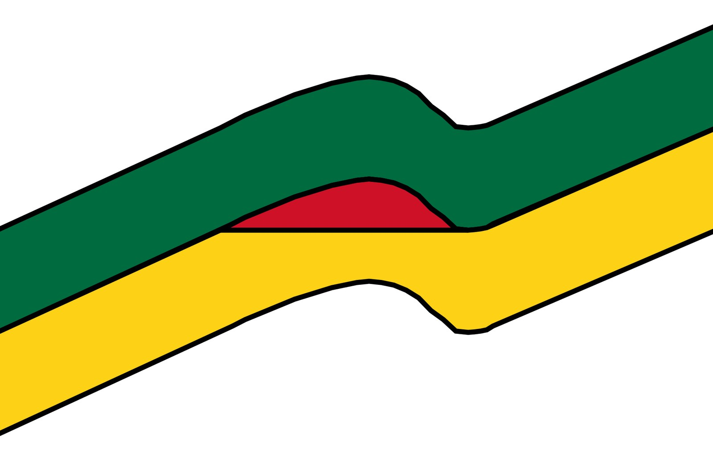
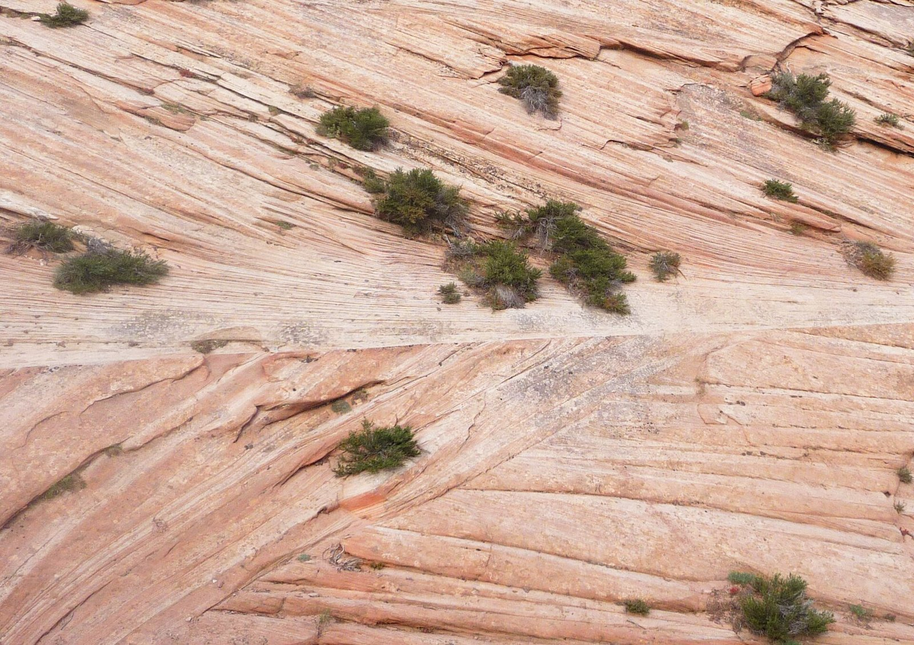
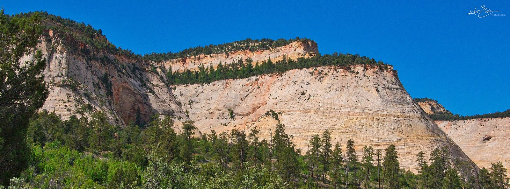

Chapter 9 — Source Rocks, Generation, Migration & Accumulation
A beautiful structure on seismic is worthless if nothing ever generated, migrated, or arrived while the trap existed. This chapter is the petroleum system’s engine room—and the reason dry holes still happen after perfect drilling.
Learning goals
- Identify common source rocks and what “gas-prone” means.
- Place biogenic gas, oil window, and thermogenic gas on a temperature story (with TVD caveats).
- Explain migration paths, why traps must pre-date charge, and density stacking.
- Define field vs reservoir, porosity/permeability cutoffs, and water saturation.
Source rock
A source rock can generate oil and/or gas from ancient organic matter mixed with sediment. Most organics oxidize and rot; preservation needs rapid burial or an oxygen-poor seabed. The rock’s dark color often tracks that organic content.

{kind=link}

{kind=link}
Sources include coal, black shale, and some dark limestones. Coal (buried wood) yields methane—mine explosions and coal-bed gas. Black shale is the most common source (~1–3% organic, up to ~20%); green/gray shale at ~0.5% is usually too lean. Dark limestones matter in places like North Africa and the Middle East. If the only effective source is coal, the basin is gas-prone.
Generation — temperature rules
You need roughly ~65 °C (150 °F), achieved by burying the source. Deeper usually means hotter.
- Biogenic / microbial gas: near surface, bacteria make nearly pure methane quickly (swamp gas). It usually leaks to air; rare traps (e.g., under permafrost) can hold huge volumes. Bacteria stop as depth/temperature rise.
- Oil window: in a typical basin ~65–150 °C ≈ ~2,100–5,500 m (7,000–18,000 ft) onshore for a normal gradient. Oil leaves “good” (~30–40 °API). Heavy oil is usually degraded later by bacteria and other processes—not born heavy.
- Below the window: >~150 °C → thermogenic gas. Shallower/cooler within the gas realm → wetter gas; deeper/hotter → dry gas. Above ~150 °C oil cracks toward graphite + gas—a floor for classic light-oil fields in that model (~5,500 m). Deep sand with carbon-coated grains can mark burned oil. Exception: very low gradients (e.g., Gulf of Mexico) can keep oil much deeper.
A dry basin may lack rich source or never entered the window. Mature = had temperature and time; immature = not yet. Of organic matter that did get deep enough, a substantial fraction (notes cite ~30–70%) may generate.
Migration
Source shale is impermeable. When solid kerogen becomes liquid/gas, volume rises, the rock fractures, hydrocarbons escape, and fractures may close again. Oil/gas are buoyant relative to water → they rise along faults, fractures, unconformities, and carrier beds (high-permeability layers). No trap on the path → seep. On average only a small share of generated HC is trapped (notes: ~10%, range ~0.3–36%); the rest stays in source, is lost en route, or leaks.
Kitchen (basin deep) and trap locations often differ on map and depth—so thermogenic gas can appear shallow after long migration.
Accumulation
The trap must exist before migration. Fold an anticline after charge and it stays empty. In the trap, fluids stack by density: free gas cap, oil, water.

{kind=link}

.svg){kind=link}
- Saturated pool: always has a gas cap; oil is full of dissolved gas.
- Unsaturated pool: no gas cap; oil could still dissolve more gas.
- Sometimes only gas over water.
Gas–oil and oil–water contacts may be sharp or gradual, usually near-horizontal. Highest point = crest. First wildcats aim on-structure; far off-structure often means dry / wet wells.
Caprock / seal: impermeable layer above—typically shale or salt; also fine limestone (micrite/chalk), tightly cemented rock, or permafrost.
Field vs reservoir; size
A field is the surface area over one or more reservoirs in the same trap (often named for a town, hill, or creek). A reservoir is a producing zone that does not communicate with another—fluids do not cross. Oil within one reservoir is fairly uniform; between reservoirs in one field, °API and sweet/sour can differ. Shared pressure ⇒ one reservoir. Reservoirs are named for the rock unit.
Size language from the notes: giant oil ≥ 500 MMbbl recoverable; super giant ≥ 5 billion bbl; giant gas ≥ 3 Tcf; super giant ≥ 20 Tcf. Timing from generate → migrate → trap can be ancient or geologically young—and in some places still ongoing.
Reservoir rock quality
A reservoir must store and transmit—porosity and permeability.

.jpg){kind=link}

{kind=link}
Porosity is % volume that is not solid. Measured from cuttings (eyeball ±1–2%), core + porosimeter, or porosity logs (neutron, density, sonic). For oil, rough quality bands: 0–5% none, 5–10% poor, 10–15% fair, 15–20% good, 20–25% excellent. Gas compresses, so it can live with less porosity, especially deep. Primary pores form at deposition; secondary from dissolution or fractures. Completion cutoffs often ~8–10% in sands, ~3–5% in limestones (fractures help)—and they move with depth and economics.
Permeability (darcy / millidarcy) is ease of flow, measured on plugs with a permeameter. For oil: ~1–10 md poor, 10–100 good, 100–1,000 excellent. Gas is far more mobile (~50×), so it needs less perm.
More porosity often means more perm in the same facies, but pore throat size rules. Fine grains → tiny throats → no flow. Coarse porous sand → permeable. Porous shale or chalk → little or zero perm. Sand or limestone with no perm = tight (example in notes: high porosity, millidarcy-to-sub-md perm → huge oil in place that will not flow easily).
Saturation and wettability
Pores always hold some water with oil/gas. Saturations are percentages that sum to 100%—hence oil wells also produce brine. The fluid coating pore walls is the wetting fluid: most sands are water-wet (water on walls, oil in centers → oil flows more easily); many limestones are oil-wet (harder recovery). Below the OWC or GWC, pores are 100% water.
Key terms
- Source rock
- Organic-rich rock capable of generating HC.
- Oil / gas window
- Temperature ranges for oil vs thermogenic gas.
- Carrier bed
- Permeable layer that transmits migrating HC.
- Caprock / seal
- Impermeable barrier above the accumulation.
- Saturated pool
- Oil at bubble point with a free gas cap.
- Porosity cutoff
- Minimum φ often required to complete.
- Tight
- Porous or not—insufficient permeability to flow.